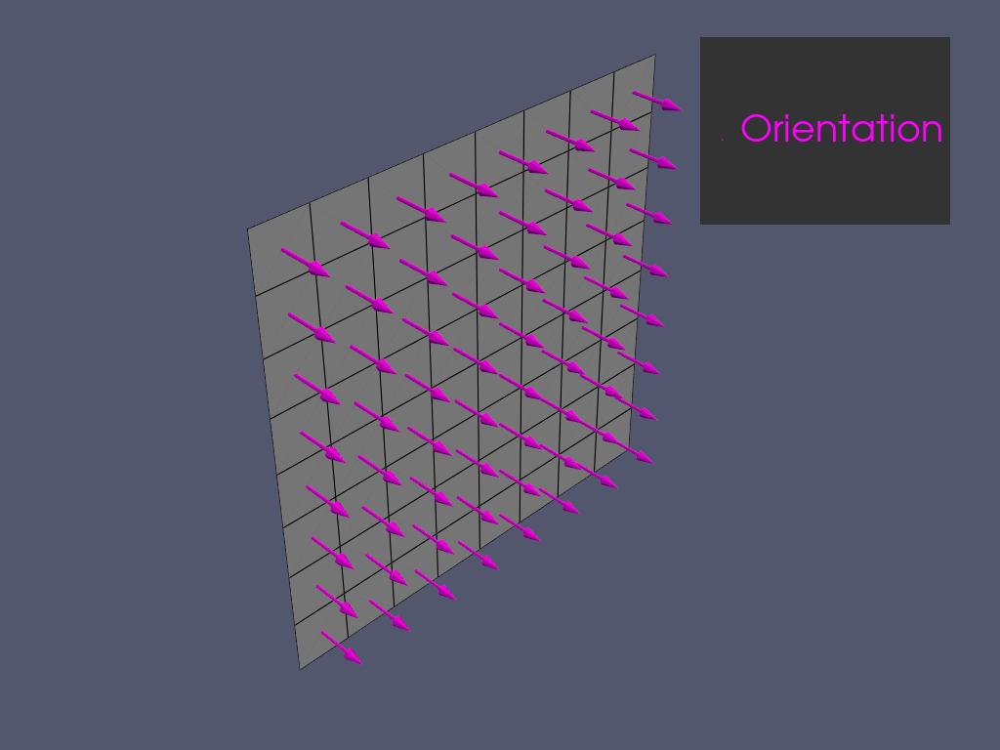
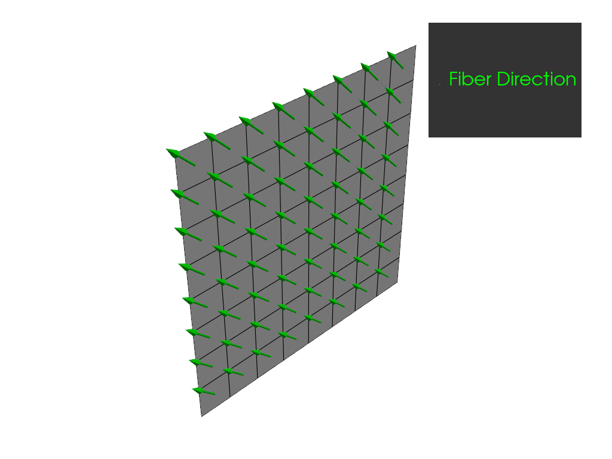
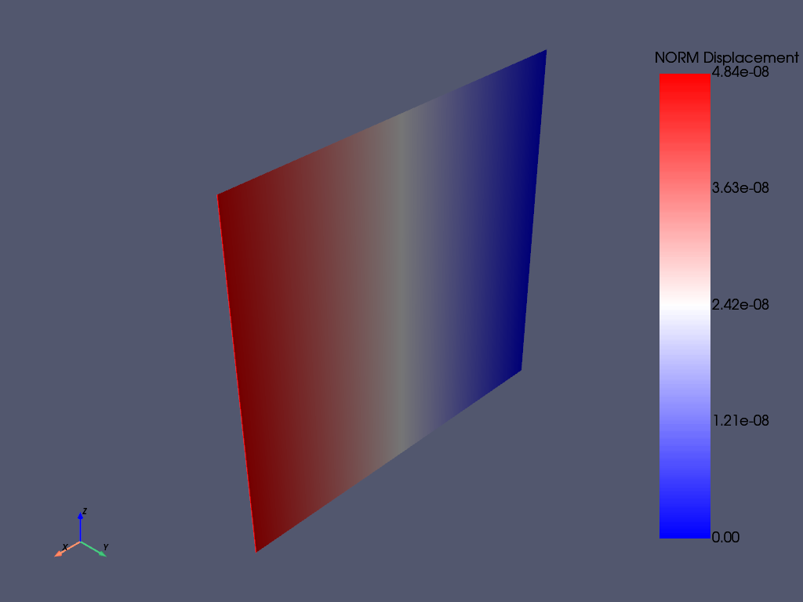
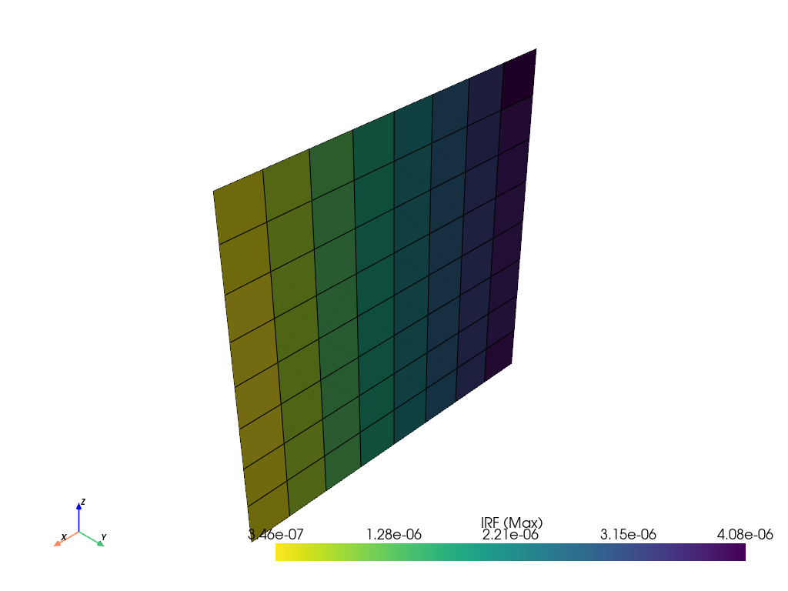

Note
Go to the end to download the full example code
Basic PyACP Example#
Define a Composite Lay-up with PyACP, solve the resulting model with PyMAPDL, and run a failure analysis with PyDPF-Composites.
The starting point is a MAPDL *.dat file which contains the mesh, material data and the boundary conditions. The Input file for PyACP section describes how input files can be created. The *.dat file is imported in PyACP to define the lay-up. PyACP exports the resulting model for PyMAPDL. Once the results are available, the RST file is loaded in PyDPF composites. The additional input files (material.xml and ACPCompositeDefinitions.h5) can also be stored with PyACP and passed to PyDPF Composites.
Import standard library and third-party dependencies.
import pathlib
import tempfile
Import pyACP dependencies
from ansys.acp.core import (
ACPWorkflow,
PlyType,
example_helpers,
get_composite_post_processing_files,
get_directions_plotter,
get_dpf_unit_system,
launch_acp,
material_property_sets,
print_model,
)
# Note: It is important to import mapdl before dpf, otherwise the plot defaults are messed up
# https://github.com/ansys/pydpf-core/issues/1363
from ansys.mapdl.core import launch_mapdl
/home/runner/.cache/pypoetry/virtualenvs/ansys-acp-core-O77fA6pn-py3.12/lib/python3.12/site-packages/ansys/mapdl/core/commands.py:185: SyntaxWarning: invalid escape sequence '\g'
f"{indented_doc_inject.strip()}\n\n{indentation}\g<0>",
/home/runner/.cache/pypoetry/virtualenvs/ansys-acp-core-O77fA6pn-py3.12/lib/python3.12/site-packages/ansys/mapdl/core/commands.py:259: SyntaxWarning: invalid escape sequence '\*'
err_type = re.findall("\*\*\* (.*) \*\*\*", output)[0]
/home/runner/.cache/pypoetry/virtualenvs/ansys-acp-core-O77fA6pn-py3.12/lib/python3.12/site-packages/ansys/mapdl/core/_commands/apdl/array_param.py:1058: SyntaxWarning: invalid escape sequence '\d'
"""Operates on two array parameters.
/home/runner/.cache/pypoetry/virtualenvs/ansys-acp-core-O77fA6pn-py3.12/lib/python3.12/site-packages/ansys/mapdl/core/_commands/apdl/macro_files.py:330: SyntaxWarning: invalid escape sequence '\_'
"""Removes (deletes) a directory.
/home/runner/.cache/pypoetry/virtualenvs/ansys-acp-core-O77fA6pn-py3.12/lib/python3.12/site-packages/ansys/mapdl/core/_commands/apdl/matrix_op.py:73: SyntaxWarning: invalid escape sequence '\_'
"""Creates a dense matrix.
/home/runner/.cache/pypoetry/virtualenvs/ansys-acp-core-O77fA6pn-py3.12/lib/python3.12/site-packages/ansys/mapdl/core/_commands/apdl/matrix_op.py:209: SyntaxWarning: invalid escape sequence '\_'
"""Exports a matrix to a file in the specified format.
/home/runner/.cache/pypoetry/virtualenvs/ansys-acp-core-O77fA6pn-py3.12/lib/python3.12/site-packages/ansys/mapdl/core/_commands/apdl/matrix_op.py:275: SyntaxWarning: invalid escape sequence '\_'
"""Computes the fast Fourier transformation of a specified matrix or
/home/runner/.cache/pypoetry/virtualenvs/ansys-acp-core-O77fA6pn-py3.12/lib/python3.12/site-packages/ansys/mapdl/core/_commands/apdl/matrix_op.py:394: SyntaxWarning: invalid escape sequence '\_'
"""Performs a solution using an iterative solver.
/home/runner/.cache/pypoetry/virtualenvs/ansys-acp-core-O77fA6pn-py3.12/lib/python3.12/site-packages/ansys/mapdl/core/_commands/apdl/matrix_op.py:808: SyntaxWarning: invalid escape sequence '\_'
"""Creates a sparse matrix.
/home/runner/.cache/pypoetry/virtualenvs/ansys-acp-core-O77fA6pn-py3.12/lib/python3.12/site-packages/ansys/mapdl/core/_commands/apdl/parameter_definition.py:38: SyntaxWarning: invalid escape sequence '\_'
"""Defines an array parameter and its dimensions.
/home/runner/.cache/pypoetry/virtualenvs/ansys-acp-core-O77fA6pn-py3.12/lib/python3.12/site-packages/ansys/mapdl/core/_commands/aux3_.py:62: SyntaxWarning: invalid escape sequence '\_'
"""Changes the listed values of the data in a set.
/home/runner/.cache/pypoetry/virtualenvs/ansys-acp-core-O77fA6pn-py3.12/lib/python3.12/site-packages/ansys/mapdl/core/_commands/aux12_/radiosity_solver.py:311: SyntaxWarning: invalid escape sequence '\_'
"""Specifies options for the view factor file and calculates view factors.
/home/runner/.cache/pypoetry/virtualenvs/ansys-acp-core-O77fA6pn-py3.12/lib/python3.12/site-packages/ansys/mapdl/core/_commands/database/components.py:369: SyntaxWarning: invalid escape sequence '\_'
"""Selects a subset of components and assemblies.
/home/runner/.cache/pypoetry/virtualenvs/ansys-acp-core-O77fA6pn-py3.12/lib/python3.12/site-packages/ansys/mapdl/core/_commands/database/picking.py:61: SyntaxWarning: invalid escape sequence '\_'
"""Specifies data required for a picking operation (GUI).
/home/runner/.cache/pypoetry/virtualenvs/ansys-acp-core-O77fA6pn-py3.12/lib/python3.12/site-packages/ansys/mapdl/core/_commands/database/selecting.py:74: SyntaxWarning: invalid escape sequence '\_'
"""Selects those areas containing the selected lines.
/home/runner/.cache/pypoetry/virtualenvs/ansys-acp-core-O77fA6pn-py3.12/lib/python3.12/site-packages/ansys/mapdl/core/_commands/database/selecting.py:116: SyntaxWarning: invalid escape sequence '\_'
"""Selects a subset of areas.
/home/runner/.cache/pypoetry/virtualenvs/ansys-acp-core-O77fA6pn-py3.12/lib/python3.12/site-packages/ansys/mapdl/core/_commands/database/selecting.py:247: SyntaxWarning: invalid escape sequence '\_'
"""Selects those areas contained in the selected volumes.
/home/runner/.cache/pypoetry/virtualenvs/ansys-acp-core-O77fA6pn-py3.12/lib/python3.12/site-packages/ansys/mapdl/core/_commands/database/selecting.py:281: SyntaxWarning: invalid escape sequence '\_'
"""Selects a DOF label set for reference by other commands.
/home/runner/.cache/pypoetry/virtualenvs/ansys-acp-core-O77fA6pn-py3.12/lib/python3.12/site-packages/ansys/mapdl/core/_commands/database/selecting.py:357: SyntaxWarning: invalid escape sequence '\_'
"""Selects a subset of elements.
/home/runner/.cache/pypoetry/virtualenvs/ansys-acp-core-O77fA6pn-py3.12/lib/python3.12/site-packages/ansys/mapdl/core/_commands/database/selecting.py:658: SyntaxWarning: invalid escape sequence '\_'
"""Selects a subset of keypoints or hard points.
/home/runner/.cache/pypoetry/virtualenvs/ansys-acp-core-O77fA6pn-py3.12/lib/python3.12/site-packages/ansys/mapdl/core/_commands/database/selecting.py:783: SyntaxWarning: invalid escape sequence '\_'
"""Selects those keypoints contained in the selected lines.
/home/runner/.cache/pypoetry/virtualenvs/ansys-acp-core-O77fA6pn-py3.12/lib/python3.12/site-packages/ansys/mapdl/core/_commands/database/selecting.py:808: SyntaxWarning: invalid escape sequence '\_'
"""Selects those keypoints associated with the selected nodes.
/home/runner/.cache/pypoetry/virtualenvs/ansys-acp-core-O77fA6pn-py3.12/lib/python3.12/site-packages/ansys/mapdl/core/_commands/database/selecting.py:847: SyntaxWarning: invalid escape sequence '\_'
"""Selects a subset of lines.
/home/runner/.cache/pypoetry/virtualenvs/ansys-acp-core-O77fA6pn-py3.12/lib/python3.12/site-packages/ansys/mapdl/core/_commands/database/selecting.py:970: SyntaxWarning: invalid escape sequence '\_'
"""Selects those lines contained in the selected areas.
/home/runner/.cache/pypoetry/virtualenvs/ansys-acp-core-O77fA6pn-py3.12/lib/python3.12/site-packages/ansys/mapdl/core/_commands/database/selecting.py:995: SyntaxWarning: invalid escape sequence '\_'
"""Selects those lines containing the selected keypoints.
/home/runner/.cache/pypoetry/virtualenvs/ansys-acp-core-O77fA6pn-py3.12/lib/python3.12/site-packages/ansys/mapdl/core/_commands/database/selecting.py:1038: SyntaxWarning: invalid escape sequence '\_'
"""Selects a subset of nodes.
/home/runner/.cache/pypoetry/virtualenvs/ansys-acp-core-O77fA6pn-py3.12/lib/python3.12/site-packages/ansys/mapdl/core/_commands/database/selecting.py:1210: SyntaxWarning: invalid escape sequence '\_'
"""Selects those nodes associated with the selected areas.
/home/runner/.cache/pypoetry/virtualenvs/ansys-acp-core-O77fA6pn-py3.12/lib/python3.12/site-packages/ansys/mapdl/core/_commands/database/selecting.py:1257: SyntaxWarning: invalid escape sequence '\_'
"""Selects those nodes attached to the selected elements.
/home/runner/.cache/pypoetry/virtualenvs/ansys-acp-core-O77fA6pn-py3.12/lib/python3.12/site-packages/ansys/mapdl/core/_commands/database/selecting.py:1320: SyntaxWarning: invalid escape sequence '\_'
"""Selects those nodes associated with the selected keypoints.
/home/runner/.cache/pypoetry/virtualenvs/ansys-acp-core-O77fA6pn-py3.12/lib/python3.12/site-packages/ansys/mapdl/core/_commands/database/selecting.py:1349: SyntaxWarning: invalid escape sequence '\_'
"""Selects those nodes associated with the selected lines.
/home/runner/.cache/pypoetry/virtualenvs/ansys-acp-core-O77fA6pn-py3.12/lib/python3.12/site-packages/ansys/mapdl/core/_commands/database/selecting.py:1386: SyntaxWarning: invalid escape sequence '\_'
"""Selects those nodes associated with the selected volumes.
/home/runner/.cache/pypoetry/virtualenvs/ansys-acp-core-O77fA6pn-py3.12/lib/python3.12/site-packages/ansys/mapdl/core/_commands/database/selecting.py:1422: SyntaxWarning: invalid escape sequence '\_'
"""Selects a subset of parts in an explicit dynamic analysis.
/home/runner/.cache/pypoetry/virtualenvs/ansys-acp-core-O77fA6pn-py3.12/lib/python3.12/site-packages/ansys/mapdl/core/_commands/database/selecting.py:1500: SyntaxWarning: invalid escape sequence '\_'
"""Selects a subset of volumes.
/home/runner/.cache/pypoetry/virtualenvs/ansys-acp-core-O77fA6pn-py3.12/lib/python3.12/site-packages/ansys/mapdl/core/_commands/database/selecting.py:1608: SyntaxWarning: invalid escape sequence '\_'
"""Selects those volumes containing the selected areas.
/home/runner/.cache/pypoetry/virtualenvs/ansys-acp-core-O77fA6pn-py3.12/lib/python3.12/site-packages/ansys/mapdl/core/_commands/graphics_/annotation.py:127: SyntaxWarning: invalid escape sequence '\_'
"""Specifies the annotation number, type, and hot spot (GUI).
/home/runner/.cache/pypoetry/virtualenvs/ansys-acp-core-O77fA6pn-py3.12/lib/python3.12/site-packages/ansys/mapdl/core/_commands/graphics_/labeling.py:304: SyntaxWarning: invalid escape sequence '\_'
"""Shows boundary condition (BC) symbols and values on displays.
/home/runner/.cache/pypoetry/virtualenvs/ansys-acp-core-O77fA6pn-py3.12/lib/python3.12/site-packages/ansys/mapdl/core/_commands/graphics_/style.py:414: SyntaxWarning: invalid escape sequence '\_'
"""Specifies the light direction for the display window.
/home/runner/.cache/pypoetry/virtualenvs/ansys-acp-core-O77fA6pn-py3.12/lib/python3.12/site-packages/ansys/mapdl/core/_commands/graphics_/style.py:502: SyntaxWarning: invalid escape sequence '\_'
"""Defines the type of surface shading used with Z-buffering.
/home/runner/.cache/pypoetry/virtualenvs/ansys-acp-core-O77fA6pn-py3.12/lib/python3.12/site-packages/ansys/mapdl/core/_commands/inq_func.py:89: SyntaxWarning: invalid escape sequence '\*'
"""Get information about an element.
/home/runner/.cache/pypoetry/virtualenvs/ansys-acp-core-O77fA6pn-py3.12/lib/python3.12/site-packages/ansys/mapdl/core/_commands/inq_func.py:168: SyntaxWarning: invalid escape sequence '\*'
"""Get information about a keypoints.
/home/runner/.cache/pypoetry/virtualenvs/ansys-acp-core-O77fA6pn-py3.12/lib/python3.12/site-packages/ansys/mapdl/core/_commands/inq_func.py:447: SyntaxWarning: invalid escape sequence '\*'
"""Get information about a volume.
/home/runner/.cache/pypoetry/virtualenvs/ansys-acp-core-O77fA6pn-py3.12/lib/python3.12/site-packages/ansys/mapdl/core/_commands/inq_func.py:697: SyntaxWarning: invalid escape sequence '\-'
"""Get information about a coupled set.
/home/runner/.cache/pypoetry/virtualenvs/ansys-acp-core-O77fA6pn-py3.12/lib/python3.12/site-packages/ansys/mapdl/core/_commands/map_cmd.py:169: SyntaxWarning: invalid escape sequence '\_'
"""Reads coordinate and pressure data from a file.
/home/runner/.cache/pypoetry/virtualenvs/ansys-acp-core-O77fA6pn-py3.12/lib/python3.12/site-packages/ansys/mapdl/core/_commands/post1_/animation.py:104: SyntaxWarning: invalid escape sequence '\_'
"""Displays animated graphics data for nonlinear problems.
/home/runner/.cache/pypoetry/virtualenvs/ansys-acp-core-O77fA6pn-py3.12/lib/python3.12/site-packages/ansys/mapdl/core/_commands/post1_/animation.py:615: SyntaxWarning: invalid escape sequence '\_'
"""Performs animation of results over multiple results files in an
/home/runner/.cache/pypoetry/virtualenvs/ansys-acp-core-O77fA6pn-py3.12/lib/python3.12/site-packages/ansys/mapdl/core/_commands/post1_/animation.py:693: SyntaxWarning: invalid escape sequence '\_'
"""Produces a sequential contour animation over a range of time.
/home/runner/.cache/pypoetry/virtualenvs/ansys-acp-core-O77fA6pn-py3.12/lib/python3.12/site-packages/ansys/mapdl/core/_commands/post1_/element_table.py:585: SyntaxWarning: invalid escape sequence '\_'
"""Allows safety factor or margin of safety calculations to be made.
/home/runner/.cache/pypoetry/virtualenvs/ansys-acp-core-O77fA6pn-py3.12/lib/python3.12/site-packages/ansys/mapdl/core/_commands/post1_/element_table.py:623: SyntaxWarning: invalid escape sequence '\_'
"""Calculates the safety factor or margin of safety.
/home/runner/.cache/pypoetry/virtualenvs/ansys-acp-core-O77fA6pn-py3.12/lib/python3.12/site-packages/ansys/mapdl/core/_commands/post1_/load_case.py:246: SyntaxWarning: invalid escape sequence '\_'
"""Selects a subset of load cases.
/home/runner/.cache/pypoetry/virtualenvs/ansys-acp-core-O77fA6pn-py3.12/lib/python3.12/site-packages/ansys/mapdl/core/_commands/post1_/path_operations.py:880: SyntaxWarning: invalid escape sequence '\_'
"""Selects a path or paths.
/home/runner/.cache/pypoetry/virtualenvs/ansys-acp-core-O77fA6pn-py3.12/lib/python3.12/site-packages/ansys/mapdl/core/_commands/post1_/results.py:85: SyntaxWarning: invalid escape sequence '\_'
"""Plots the fracture parameter (CINT) result data.
/home/runner/.cache/pypoetry/virtualenvs/ansys-acp-core-O77fA6pn-py3.12/lib/python3.12/site-packages/ansys/mapdl/core/_commands/post1_/results.py:532: SyntaxWarning: invalid escape sequence '\_'
"""Lists the fracture parameter (CINT) results data.
/home/runner/.cache/pypoetry/virtualenvs/ansys-acp-core-O77fA6pn-py3.12/lib/python3.12/site-packages/ansys/mapdl/core/_commands/post1_/special.py:381: SyntaxWarning: invalid escape sequence '\_'
"""Provides tools for determining minimum and maximum possible result
/home/runner/.cache/pypoetry/virtualenvs/ansys-acp-core-O77fA6pn-py3.12/lib/python3.12/site-packages/ansys/mapdl/core/_commands/post1_/surface_operations.py:413: SyntaxWarning: invalid escape sequence '\_'
"""Selects a subset of surfaces
/home/runner/.cache/pypoetry/virtualenvs/ansys-acp-core-O77fA6pn-py3.12/lib/python3.12/site-packages/ansys/mapdl/core/_commands/post26_/setup.py:115: SyntaxWarning: invalid escape sequence '\_'
"""Stores fracture parameter information in a variable.
/home/runner/.cache/pypoetry/virtualenvs/ansys-acp-core-O77fA6pn-py3.12/lib/python3.12/site-packages/ansys/mapdl/core/_commands/preproc/areas.py:73: SyntaxWarning: invalid escape sequence '\_'
"""Associates element attributes with the selected, unmeshed areas.
/home/runner/.cache/pypoetry/virtualenvs/ansys-acp-core-O77fA6pn-py3.12/lib/python3.12/site-packages/ansys/mapdl/core/_commands/preproc/elements.py:349: SyntaxWarning: invalid escape sequence '\|'
"""Generates elements from an existing pattern.
/home/runner/.cache/pypoetry/virtualenvs/ansys-acp-core-O77fA6pn-py3.12/lib/python3.12/site-packages/ansys/mapdl/core/_commands/preproc/elements.py:1045: SyntaxWarning: invalid escape sequence '\|'
"""Generates elements from an existing pattern.
/home/runner/.cache/pypoetry/virtualenvs/ansys-acp-core-O77fA6pn-py3.12/lib/python3.12/site-packages/ansys/mapdl/core/_commands/preproc/explicit_dynamics.py:1491: SyntaxWarning: invalid escape sequence '\_'
"""Selects and plots explicit dynamic contact entities.
/home/runner/.cache/pypoetry/virtualenvs/ansys-acp-core-O77fA6pn-py3.12/lib/python3.12/site-packages/ansys/mapdl/core/_commands/preproc/explicit_dynamics.py:1532: SyntaxWarning: invalid escape sequence '\_'
"""Specifies small penetration checking for contact entities in an
/home/runner/.cache/pypoetry/virtualenvs/ansys-acp-core-O77fA6pn-py3.12/lib/python3.12/site-packages/ansys/mapdl/core/_commands/preproc/hard_points.py:13: SyntaxWarning: invalid escape sequence '\_'
"""Defines a hard point.
/home/runner/.cache/pypoetry/virtualenvs/ansys-acp-core-O77fA6pn-py3.12/lib/python3.12/site-packages/ansys/mapdl/core/_commands/preproc/keypoints.py:63: SyntaxWarning: invalid escape sequence '\_'
"""Creates a keypoint between two existing keypoints.
/home/runner/.cache/pypoetry/virtualenvs/ansys-acp-core-O77fA6pn-py3.12/lib/python3.12/site-packages/ansys/mapdl/core/_commands/preproc/keypoints.py:130: SyntaxWarning: invalid escape sequence '\_'
"""Creates a keypoint at the center of a circular arc defined
/home/runner/.cache/pypoetry/virtualenvs/ansys-acp-core-O77fA6pn-py3.12/lib/python3.12/site-packages/ansys/mapdl/core/_commands/preproc/meshing.py:980: SyntaxWarning: invalid escape sequence '\_'
"""Associates attributes with the selected, unmeshed keypoints.
/home/runner/.cache/pypoetry/virtualenvs/ansys-acp-core-O77fA6pn-py3.12/lib/python3.12/site-packages/ansys/mapdl/core/_commands/preproc/meshing.py:1244: SyntaxWarning: invalid escape sequence '\_'
"""Associates element attributes with the selected, unmeshed lines.
/home/runner/.cache/pypoetry/virtualenvs/ansys-acp-core-O77fA6pn-py3.12/lib/python3.12/site-packages/ansys/mapdl/core/_commands/preproc/meshing.py:2745: SyntaxWarning: invalid escape sequence '\_'
"""Associates element attributes with the selected, unmeshed volumes.
/home/runner/.cache/pypoetry/virtualenvs/ansys-acp-core-O77fA6pn-py3.12/lib/python3.12/site-packages/ansys/mapdl/core/_commands/preproc/sections.py:1053: SyntaxWarning: invalid escape sequence '\_'
"""Associates section type information with a section ID number.
/home/runner/.cache/pypoetry/virtualenvs/ansys-acp-core-O77fA6pn-py3.12/lib/python3.12/site-packages/ansys/mapdl/core/_commands/preproc/sections.py:1240: SyntaxWarning: invalid escape sequence '\_'
"""Summarizes the section properties for all defined sections in the
/home/runner/.cache/pypoetry/virtualenvs/ansys-acp-core-O77fA6pn-py3.12/lib/python3.12/site-packages/ansys/mapdl/core/_commands/reduced/generation.py:151: SyntaxWarning: invalid escape sequence '\_'
"""Defines and edits various modal parameters for the ROM method.
/home/runner/.cache/pypoetry/virtualenvs/ansys-acp-core-O77fA6pn-py3.12/lib/python3.12/site-packages/ansys/mapdl/core/_commands/reduced/generation.py:307: SyntaxWarning: invalid escape sequence '\_'
"""Defines options for ROM response surface fitting.
/home/runner/.cache/pypoetry/virtualenvs/ansys-acp-core-O77fA6pn-py3.12/lib/python3.12/site-packages/ansys/mapdl/core/_commands/reduced/generation.py:343: SyntaxWarning: invalid escape sequence '\_'
"""Plots response surface of ROM function or its derivatives with respect
/home/runner/.cache/pypoetry/virtualenvs/ansys-acp-core-O77fA6pn-py3.12/lib/python3.12/site-packages/ansys/mapdl/core/_commands/solution/analysis_options.py:2568: SyntaxWarning: invalid escape sequence '\_'
"""Checks for overconstraint among constraint equations and Lagrange
/home/runner/.cache/pypoetry/virtualenvs/ansys-acp-core-O77fA6pn-py3.12/lib/python3.12/site-packages/ansys/mapdl/core/_commands/solution/analysis_options.py:2751: SyntaxWarning: invalid escape sequence '\_'
"""Sets linear perturbation analysis options.
/home/runner/.cache/pypoetry/virtualenvs/ansys-acp-core-O77fA6pn-py3.12/lib/python3.12/site-packages/ansys/mapdl/core/_commands/solution/dynamic_options.py:270: SyntaxWarning: invalid escape sequence '\_'
"""Perform the harmonic ocean wave procedure (HOWP).
/home/runner/.cache/pypoetry/virtualenvs/ansys-acp-core-O77fA6pn-py3.12/lib/python3.12/site-packages/ansys/mapdl/core/_commands/solution/fe_body_loads.py:674: SyntaxWarning: invalid escape sequence '\_'
"""Imports initial stresses from an explicit dynamics run into ANSYS.
/home/runner/.cache/pypoetry/virtualenvs/ansys-acp-core-O77fA6pn-py3.12/lib/python3.12/site-packages/ansys/mapdl/core/_commands/solution/miscellaneous_loads.py:990: SyntaxWarning: invalid escape sequence '\-'
"""Controls file writing for multiframe restarts.
/home/runner/.cache/pypoetry/virtualenvs/ansys-acp-core-O77fA6pn-py3.12/lib/python3.12/site-packages/ansys/mapdl/core/_commands/solution/multi_field_solver_load_transfer.py:14: SyntaxWarning: invalid escape sequence '\_'
"""Defines a load transfer for code coupling analyses.
/home/runner/.cache/pypoetry/virtualenvs/ansys-acp-core-O77fA6pn-py3.12/lib/python3.12/site-packages/ansys/mapdl/core/_commands/solution/radiosity.py:46: SyntaxWarning: invalid escape sequence '\_'
"""Creates or loads the radiosity mapping data file for SURF251 or SURF252
/home/runner/.cache/pypoetry/virtualenvs/ansys-acp-core-O77fA6pn-py3.12/lib/python3.12/site-packages/ansys/mapdl/core/_commands/solution/spectrum_options.py:787: SyntaxWarning: invalid escape sequence '\_'
"""Defines the type of input PSD.
/home/runner/.cache/pypoetry/virtualenvs/ansys-acp-core-O77fA6pn-py3.12/lib/python3.12/site-packages/ansys/mapdl/core/_commands/solution/spectrum_options.py:1303: SyntaxWarning: invalid escape sequence '\_'
"""Defines the type of multi-point response spectrum.
/home/runner/.cache/pypoetry/virtualenvs/ansys-acp-core-O77fA6pn-py3.12/lib/python3.12/site-packages/ansys/mapdl/core/launcher.py:961: SyntaxWarning: invalid escape sequence '\-'
"""Start MAPDL locally.
/home/runner/.cache/pypoetry/virtualenvs/ansys-acp-core-O77fA6pn-py3.12/lib/python3.12/site-packages/ansys/mapdl/core/mapdl.py:2663: SyntaxWarning: invalid escape sequence '\*'
"""Retrieves a value and stores it as a scalar parameter or part of an array parameter.
/home/runner/.cache/pypoetry/virtualenvs/ansys-acp-core-O77fA6pn-py3.12/lib/python3.12/site-packages/ansys/mapdl/core/mapdl.py:4708: SyntaxWarning: invalid escape sequence '\|'
"if grep -sq 'docker\|lxc' /proc/1/cgroup; then echo 'true' > __outputcmd__.txt; else echo 'false' > __outputcmd__.txt;fi;"
/home/runner/.cache/pypoetry/virtualenvs/ansys-acp-core-O77fA6pn-py3.12/lib/python3.12/site-packages/ansys/mapdl/core/parameters.py:128: SyntaxWarning: invalid escape sequence '\*'
"""Current routine string as a string. For example ``"/PREP7"``
/home/runner/.cache/pypoetry/virtualenvs/ansys-acp-core-O77fA6pn-py3.12/lib/python3.12/site-packages/ansys/mapdl/core/parameters.py:531: SyntaxWarning: invalid escape sequence '\*'
"""Load a numpy array or python list directly to MAPDL
/home/runner/.cache/pypoetry/virtualenvs/ansys-acp-core-O77fA6pn-py3.12/lib/python3.12/site-packages/ansys/mapdl/core/parameters.py:721: SyntaxWarning: invalid escape sequence '\*'
"""Interprets \*STATUS command output from MAPDL
Get example file from server
tempdir = tempfile.TemporaryDirectory()
WORKING_DIR = pathlib.Path(tempdir.name)
input_file = example_helpers.get_example_file(
example_helpers.ExampleKeys.BASIC_FLAT_PLATE_DAT, WORKING_DIR
)
Launch the PyACP server and connect to it.
acp = launch_acp()
Define the input file and instantiate an ACPWorkflow. The ACPWorkflow class provides convenience methods which simplify the file handling. It automatically creates a model based on the input file.
workflow = ACPWorkflow.from_cdb_or_dat_file(
acp=acp,
cdb_or_dat_file_path=input_file,
local_working_directory=WORKING_DIR,
)
model = workflow.model
print(workflow.working_directory.path)
print(model.unit_system)
/tmp/tmpvpyg4jhi
mks
Visualize the loaded mesh.

/home/runner/.cache/pypoetry/virtualenvs/ansys-acp-core-O77fA6pn-py3.12/lib/python3.12/site-packages/trame_vuetify/widgets/vuetify.py:495: SyntaxWarning: invalid escape sequence '\|'
"""
Create an orthotropic material and fabric including strain limits, which are later used to post-process the simulation.
engineering_constants = (
material_property_sets.ConstantEngineeringConstants.from_orthotropic_constants(
E1=5e10, E2=1e10, E3=1e10, nu12=0.28, nu13=0.28, nu23=0.3, G12=5e9, G23=4e9, G31=4e9
)
)
strain_limit = 0.01
strain_limits = material_property_sets.ConstantStrainLimits.from_orthotropic_constants(
eXc=-strain_limit,
eYc=-strain_limit,
eZc=-strain_limit,
eXt=strain_limit,
eYt=strain_limit,
eZt=strain_limit,
eSxy=strain_limit,
eSyz=strain_limit,
eSxz=strain_limit,
)
ud_material = model.create_material(
name="UD",
ply_type=PlyType.REGULAR,
engineering_constants=engineering_constants,
strain_limits=strain_limits,
)
fabric = model.create_fabric(name="UD", material=ud_material, thickness=0.1)
Define a rosette and an oriented selection set and plot the orientations.
rosette = model.create_rosette(origin=(0.0, 0.0, 0.0), dir1=(1.0, 0.0, 0.0), dir2=(0.0, 0.0, 1.0))
oss = model.create_oriented_selection_set(
name="oss",
orientation_point=(0.0, 0.0, 0.0),
orientation_direction=(0.0, 1.0, 0),
element_sets=[model.element_sets["All_Elements"]],
rosettes=[rosette],
)
model.update()
orientation = oss.elemental_data.orientation
assert orientation is not None
plotter = get_directions_plotter(model=model, components=[orientation])
plotter.show()

Create various plies with different angles and add them to a modeling group.
modeling_group = model.create_modeling_group(name="modeling_group")
angles = [0, 45, -45, 45, -45, 0]
for idx, angle in enumerate(angles):
modeling_group.create_modeling_ply(
name=f"ply_{idx}_{angle}_{fabric.name}",
ply_angle=angle,
ply_material=fabric,
oriented_selection_sets=[oss],
)
model.update()
Show the fiber directions of a specific ply.
modeling_ply = model.modeling_groups["modeling_group"].modeling_plies["ply_4_-45_UD"]
fiber_direction = modeling_ply.elemental_data.fiber_direction
assert fiber_direction is not None
plotter = get_directions_plotter(
model=model,
components=[fiber_direction],
)
plotter.show()

Print the model tree for a quick overview. Note: The model can also be opened in the ACP GUI. See View the model in the ACP GUI.
print_model(model)
Model
Material Data
Materials
1
UD
Fabrics
UD
Element Sets
All_Elements
Edge Sets
_FIXEDSU
Geometry
Rosettes
12
Rosette
Lookup Tables
Selection Rules
Oriented Selection Sets
oss
Modeling Groups
modeling_group
ply_0_0_UD
ProductionPly
P1L1__ply_0_0_UD
ply_1_45_UD
ProductionPly.2
P1L1__ply_1_45_UD
ply_2_-45_UD
ProductionPly.3
P1L1__ply_2_-45_UD
ply_3_45_UD
ProductionPly.4
P1L1__ply_3_45_UD
ply_4_-45_UD
ProductionPly.5
P1L1__ply_4_-45_UD
ply_5_0_UD
ProductionPly.6
P1L1__ply_5_0_UD
Solve the model with MAPDL#
Launch the MAPDL instance.
mapdl = launch_mapdl()
mapdl.clear()
/home/runner/.cache/pypoetry/virtualenvs/ansys-acp-core-O77fA6pn-py3.12/lib/python3.12/site-packages/ansys/mapdl/core/component.py:147: SyntaxWarning: invalid escape sequence '\>'
"""Collection of MAPDL components.
Load the CDB file into PyMAPDL.
mapdl.input(str(workflow.get_local_cdb_file()))
'\n /INPUT FILE= ACP Lay-up Model.cdb LINE= 0\n\n\n\n DO NOT WRITE ELEMENT RESULTS INTO DATABASE\n\n *GET _WALLSTRT FROM ACTI ITEM=TIME WALL VALUE= 10.3847222 \n\n TITLE= \n wbnew--Static Structural (A5) \n\n ACT Extensions:\n LSDYNA, 2024.1\n 5f463412-bd3e-484b-87e7-cbc0a665e474, wbex\n /COM, ANSYSMotion, 2024.2\n 20180725-3f81-49eb-9f31-41364844c769, wbex\n \n\n SET PARAMETER DIMENSIONS ON _WB_PROJECTSCRATCH_DIR\n TYPE=STRI DIMENSIONS= 248 1 1\n\n PARAMETER _WB_PROJECTSCRATCH_DIR(1) = D:\\ARM_Reports\\ACP_IMP_LAY_SEC_037_01102024082855\\TBSolves\\WB_jvonrick_50936_2\\wbnew_files\\dp0\\SYS\\MECH\\\n\n SET PARAMETER DIMENSIONS ON _WB_SOLVERFILES_DIR\n TYPE=STRI DIMENSIONS= 248 1 1\n\n PARAMETER _WB_SOLVERFILES_DIR(1) = D:\\ARM_Reports\\ACP_IMP_LAY_SEC_037_01102024082855\\TBSolves\\WB_jvonrick_50936_2\\wbnew_files\\dp0\\SYS\\MECH\\\n\n SET PARAMETER DIMENSIONS ON _WB_USERFILES_DIR\n TYPE=STRI DIMENSIONS= 248 1 1\n\n PARAMETER _WB_USERFILES_DIR(1) = D:\\ARM_Reports\\ACP_IMP_LAY_SEC_037_01102024082855\\TBSolves\\WB_jvonrick_50936_2\\wbnew_files\\user_files\\\n --- Data in consistent MKS units. See Solving Units in the help system for more\n\n MKS UNITS SPECIFIED FOR INTERNAL \n LENGTH (l) = METER (M)\n MASS (M) = KILOGRAM (KG)\n TIME (t) = SECOND (SEC)\n TEMPERATURE (T) = CELSIUS (C)\n TOFFSET = 273.0\n CHARGE (Q) = COULOMB\n FORCE (f) = NEWTON (N) (KG-M/SEC2)\n HEAT = JOULE (N-M)\n\n PRESSURE = PASCAL (NEWTON/M**2)\n ENERGY (W) = JOULE (N-M)\n POWER (P) = WATT (N-M/SEC)\n CURRENT (i) = AMPERE (COULOMBS/SEC)\n CAPACITANCE (C) = FARAD\n INDUCTANCE (L) = HENRY\n MAGNETIC FLUX = WEBER\n RESISTANCE (R) = OHM\n ELECTRIC POTENTIAL = VOLT\n\n INPUT UNITS ARE ALSO SET TO MKS \n\n *** MAPDL - ENGINEERING ANALYSIS SYSTEM RELEASE 23.1BETA ***\n Ansys Mechanical Enterprise \n 00000000 VERSION=LINUX x64 10:23:05 FEB 29, 2024 CP= 0.647\n\n wbnew--Static Structural (A5) \n\n\n\n ** WARNING: PRE-RELEASE VERSION OF MAPDL 23.1BETA\n ANSYS,INC TESTING IS NOT COMPLETE - CHECK RESULTS CAREFULLY **\n\n ***** MAPDL ANALYSIS DEFINITION (PREP7) *****\n *********** Nodes for the whole assembly ***********\n *********** Elements for Body 1 "SYS\\Surface" ***********\n *********** Send User Defined Coordinate System(s) ***********\n *********** Set Reference Temperature ***********\n *********** Send Materials ***********\n *********** Send Sheet Properties ***********\n *********** Fixed Supports ***********\n *********** Define Force Using Surface Effect Elements ***********\n\n\n ***** ROUTINE COMPLETED ***** CP = 0.652\n\n\n --- Number of total nodes = 81\n --- Number of contact elements = 8\n --- Number of spring elements = 0\n --- Number of bearing elements = 0\n --- Number of solid elements = 64\n --- Number of condensed parts = 0\n --- Number of total elements = 72\n\n *GET _WALLBSOL FROM ACTI ITEM=TIME WALL VALUE= 10.3847222 \n ****************************************************************************\n ************************* SOLUTION ********************************\n ****************************************************************************\n\n ***** MAPDL SOLUTION ROUTINE *****\n\n\n PERFORM A STATIC ANALYSIS\n THIS WILL BE A NEW ANALYSIS\n\n PARAMETER _THICKRATIO = 0.000000000 \n\n USE SPARSE MATRIX DIRECT SOLVER\n\n CONTACT INFORMATION PRINTOUT LEVEL 1\n\n CHECK INITIAL OPEN/CLOSED STATUS OF SELECTED CONTACT ELEMENTS\n AND LIST DETAILED CONTACT PAIR INFORMATION\n\n SPLIT CONTACT SURFACES AT SOLVE PHASE\n\n DO NOT COMBINE ELEMENT MATRIX FILES (.emat) AFTER DISTRIBUTED PARALLEL SOLUTION\n\n DO NOT COMBINE ELEMENT SAVE DATA FILES (.esav) AFTER DISTRIBUTED PARALLEL SOLUTION\n\n NLDIAG: Nonlinear diagnostics CONT option is set to ON. \n Writing frequency : each ITERATION.\n\n DO NOT SAVE ANY RESTART FILES AT ALL\n ****************************************************\n ******************* SOLVE FOR LS 1 OF 1 ****************\n\n SELECT FOR ITEM=TYPE COMPONENT= \n IN RANGE 2 TO 2 STEP 1\n\n 8 ELEMENTS (OF 72 DEFINED) SELECTED BY ESEL COMMAND.\n\n SELECT ALL NODES HAVING ANY ELEMENT IN ELEMENT SET.\n\n 9 NODES (OF 81 DEFINED) SELECTED FROM\n 8 SELECTED ELEMENTS BY NSLE COMMAND.\n\n SPECIFIED SURFACE LOAD PRES FOR ALL SELECTED ELEMENTS LKEY = 1 KVAL = 1\n VALUES = 0.0000 0.0000 0.0000 0.0000 \n\n SPECIFIED SURFACE LOAD PRES FOR ALL SELECTED ELEMENTS LKEY = 2 KVAL = 1\n VALUES = -10000. -10000. -10000. -10000. \n\n SPECIFIED SURFACE LOAD PRES FOR ALL SELECTED ELEMENTS LKEY = 3 KVAL = 1\n VALUES = 0.0000 0.0000 0.0000 0.0000 \n\n ALL SELECT FOR ITEM=NODE COMPONENT= \n IN RANGE 1 TO 81 STEP 1\n\n 81 NODES (OF 81 DEFINED) SELECTED BY NSEL COMMAND.\n\n ALL SELECT FOR ITEM=ELEM COMPONENT= \n IN RANGE 1 TO 72 STEP 1\n\n 72 ELEMENTS (OF 72 DEFINED) SELECTED BY ESEL COMMAND.\n\n PRINTOUT RESUMED BY /GOP\n\n USE 1 SUBSTEPS INITIALLY THIS LOAD STEP FOR ALL DEGREES OF FREEDOM\n FOR AUTOMATIC TIME STEPPING:\n USE 1 SUBSTEPS AS A MAXIMUM\n USE 1 SUBSTEPS AS A MINIMUM\n\n TIME= 1.0000 \n\n ERASE THE CURRENT DATABASE OUTPUT CONTROL TABLE.\n\n\n WRITE ALL ITEMS TO THE DATABASE WITH A FREQUENCY OF NONE\n FOR ALL APPLICABLE ENTITIES\n\n WRITE NSOL ITEMS TO THE DATABASE WITH A FREQUENCY OF ALL \n FOR ALL APPLICABLE ENTITIES\n\n WRITE RSOL ITEMS TO THE DATABASE WITH A FREQUENCY OF ALL \n FOR ALL APPLICABLE ENTITIES\n\n WRITE EANG ITEMS TO THE DATABASE WITH A FREQUENCY OF ALL \n FOR ALL APPLICABLE ENTITIES\n\n WRITE ETMP ITEMS TO THE DATABASE WITH A FREQUENCY OF ALL \n FOR ALL APPLICABLE ENTITIES\n\n WRITE VENG ITEMS TO THE DATABASE WITH A FREQUENCY OF ALL \n FOR ALL APPLICABLE ENTITIES\n\n WRITE STRS ITEMS TO THE DATABASE WITH A FREQUENCY OF ALL \n FOR ALL APPLICABLE ENTITIES\n\n WRITE EPEL ITEMS TO THE DATABASE WITH A FREQUENCY OF ALL \n FOR ALL APPLICABLE ENTITIES\n\n WRITE EPPL ITEMS TO THE DATABASE WITH A FREQUENCY OF ALL \n FOR ALL APPLICABLE ENTITIES\n\n WRITE CONT ITEMS TO THE DATABASE WITH A FREQUENCY OF ALL \n FOR ALL APPLICABLE ENTITIES\n\n *GET ANSINTER_ FROM ACTI ITEM=INT VALUE= 0.00000000 \n\n *IF ANSINTER_ ( = 0.00000 ) NE \n 0 ( = 0.00000 ) THEN \n\n *ENDIF\n\n ***** MAPDL SOLVE COMMAND *****\n\n *** WARNING *** CP = 0.657 TIME= 10:23:05\n Element shape checking is currently inactive. Issue SHPP,ON or \n SHPP,WARN to reactivate, if desired. \n\n *** NOTE *** CP = 0.658 TIME= 10:23:05\n The model data was checked and warning messages were found. \n Please review output or errors file ( /file.err ) for these warning \n messages. \n\n *** MAPDL - ENGINEERING ANALYSIS SYSTEM RELEASE 23.1BETA ***\n Ansys Mechanical Enterprise \n 00000000 VERSION=LINUX x64 10:23:05 FEB 29, 2024 CP= 0.658\n\n wbnew--Static Structural (A5) \n\n\n\n ** WARNING: PRE-RELEASE VERSION OF MAPDL 23.1BETA\n ANSYS,INC TESTING IS NOT COMPLETE - CHECK RESULTS CAREFULLY **\n\n S O L U T I O N O P T I O N S\n\n PROBLEM DIMENSIONALITY. . . . . . . . . . . . .3-D \n DEGREES OF FREEDOM. . . . . . UX UY UZ ROTX ROTY ROTZ\n ANALYSIS TYPE . . . . . . . . . . . . . . . . .STATIC (STEADY-STATE)\n OFFSET TEMPERATURE FROM ABSOLUTE ZERO . . . . . 273.15 \n EQUATION SOLVER OPTION. . . . . . . . . . . . .SPARSE \n GLOBALLY ASSEMBLED MATRIX . . . . . . . . . . .SYMMETRIC \n\n *** NOTE *** CP = 0.658 TIME= 10:23:05\n Poisson\'s ratio PR input has been converted to NU input. \n\n L O A D S T E P O P T I O N S\n\n LOAD STEP NUMBER. . . . . . . . . . . . . . . . 1\n TIME AT END OF THE LOAD STEP. . . . . . . . . . 1.0000 \n NUMBER OF SUBSTEPS. . . . . . . . . . . . . . . 1\n STEP CHANGE BOUNDARY CONDITIONS . . . . . . . . NO\n COPY INTEGRATION POINT VALUES TO NODE . . . . . YES\n PRINT OUTPUT CONTROLS . . . . . . . . . . . . .NO PRINTOUT\n DATABASE OUTPUT CONTROLS\n ITEM FREQUENCY COMPONENT\n ALL NONE \n NSOL ALL \n RSOL ALL \n EANG ALL \n ETMP ALL \n VENG ALL \n STRS ALL \n EPEL ALL \n EPPL ALL \n CONT ALL \n\n\n SOLUTION MONITORING INFO IS WRITTEN TO FILE= file.mntr \n\n *** NOTE *** CP = 0.667 TIME= 10:23:05\n Predictor is ON by default for structural elements with rotational \n degrees of freedom. Use the PRED,OFF command to turn the predictor \n OFF if it adversely affects the convergence. \n\n\n Range of element maximum matrix coefficients in global coordinates\n Maximum = 8.014568245E+11 at element 53. \n Minimum = 8.014568181E+11 at element 21. \n\n *** ELEMENT MATRIX FORMULATION TIMES\n TYPE NUMBER ENAME TOTAL CP AVE CP\n\n 1 64 SHELL181 0.024 0.000377\n 2 8 SURF156 0.000 0.000053\n Time at end of element matrix formulation CP = 0.694484949. \n\n SPARSE MATRIX DIRECT SOLVER.\n Number of equations = 432, Maximum wavefront = 42\n Memory allocated for solver = 0.629 MB\n Memory required for in-core solution = 0.608 MB\n Memory required for out-of-core solution = 0.415 MB\n\n *** NOTE *** CP = 0.702 TIME= 10:23:05\n The Sparse Matrix Solver is currently running in the in-core memory \n mode. This memory mode uses the most amount of memory in order to \n avoid using the hard drive as much as possible, which most often \n results in the fastest solution time. This mode is recommended if \n enough physical memory is present to accommodate all of the solver \n data. \n Sparse solver maximum pivot= 3.20582728E+12 at node 57 UX. \n Sparse solver minimum pivot= 139631.198 at node 15 ROTY. \n Sparse solver minimum pivot in absolute value= 139631.198 at node 15 \n ROTY. \n\n *** ELEMENT RESULT CALCULATION TIMES\n TYPE NUMBER ENAME TOTAL CP AVE CP\n\n 1 64 SHELL181 0.049 0.000761\n 2 8 SURF156 0.000 0.000038\n\n *** NODAL LOAD CALCULATION TIMES\n TYPE NUMBER ENAME TOTAL CP AVE CP\n\n 1 64 SHELL181 0.002 0.000035\n 2 8 SURF156 0.000 0.000008\n *** LOAD STEP 1 SUBSTEP 1 COMPLETED. CUM ITER = 1\n *** TIME = 1.00000 TIME INC = 1.00000 NEW TRIANG MATRIX\n\n\n *** MAPDL BINARY FILE STATISTICS\n BUFFER SIZE USED= 16384\n 0.062 MB WRITTEN ON ELEMENT MATRIX FILE: file.emat\n 0.125 MB WRITTEN ON ASSEMBLED MATRIX FILE: file.full\n 0.562 MB WRITTEN ON RESULTS FILE: file.rst\n *************** Write FE CONNECTORS *********\n\n WRITE OUT CONSTRAINT EQUATIONS TO FILE= file.ce \n ****************************************************\n *************** FINISHED SOLVE FOR LS 1 *************\n\n *GET _WALLASOL FROM ACTI ITEM=TIME WALL VALUE= 10.3847222 \n\n PRINTOUT RESUMED BY /GOP\n\n FINISH SOLUTION PROCESSING\n\n\n ***** ROUTINE COMPLETED ***** CP = 0.768\n\n\n\n *** MAPDL - ENGINEERING ANALYSIS SYSTEM RELEASE 23.1BETA ***\n Ansys Mechanical Enterprise \n 00000000 VERSION=LINUX x64 10:23:05 FEB 29, 2024 CP= 0.769\n\n wbnew--Static Structural (A5) \n\n\n\n ** WARNING: PRE-RELEASE VERSION OF MAPDL 23.1BETA\n ANSYS,INC TESTING IS NOT COMPLETE - CHECK RESULTS CAREFULLY **\n\n ***** MAPDL RESULTS INTERPRETATION (POST1) *****\n\n *** NOTE *** CP = 0.769 TIME= 10:23:05\n Reading results into the database (SET command) will update the current \n displacement and force boundary conditions in the database with the \n values from the results file for that load set. Note that any \n subsequent solutions will use these values unless action is taken to \n either SAVE the current values or not overwrite them (/EXIT,NOSAVE). \n\n Set Encoding of XML File to:ISO-8859-1\n\n Set Output of XML File to:\n PARM, , , , , , , , , , , ,\n , , , , , , ,\n\n DATABASE WRITTEN ON FILE parm.xml \n\n EXIT THE MAPDL POST1 DATABASE PROCESSOR\n\n\n ***** ROUTINE COMPLETED ***** CP = 0.770\n\n\n\n PRINTOUT RESUMED BY /GOP\n\n *GET _WALLDONE FROM ACTI ITEM=TIME WALL VALUE= 10.3847222 \n\n PARAMETER _PREPTIME = 0.000000000 \n\n PARAMETER _SOLVTIME = 0.000000000 \n\n PARAMETER _POSTTIME = 0.000000000 \n\n PARAMETER _TOTALTIM = 0.000000000 \n\n *GET _DLBRATIO FROM ACTI ITEM=SOLU DLBR VALUE= 0.00000000 \n\n *GET _COMBTIME FROM ACTI ITEM=SOLU COMB VALUE= 0.00000000 \n\n *GET _SSMODE FROM ACTI ITEM=SOLU SSMM VALUE= 2.00000000 \n\n *GET _NDOFS FROM ACTI ITEM=SOLU NDOF VALUE= 432.000000 \n\n *GET _SOL_END_TIME FROM ACTI ITEM=SET TIME VALUE= 1.00000000 \n\n *IF _sol_end_time ( = 1.00000 ) EQ \n 1.000000 ( = 1.00000 ) THEN \n\n /FCLEAN COMMAND REMOVING ALL LOCAL FILES\n\n *ENDIF\n --- Total number of nodes = 81\n --- Total number of elements = 72\n --- Element load balance ratio = 0\n --- Time to combine distributed files = 0\n --- Sparse memory mode = 2\n --- Number of DOF = 432\n'
Solve the model
mapdl.allsel()
mapdl.slashsolu()
mapdl.solve()
***** MAPDL SOLVE COMMAND *****
*** WARNING *** CP = 0.791 TIME= 10:23:05
Element shape checking is currently inactive. Issue SHPP,ON or
SHPP,WARN to reactivate, if desired.
*** NOTE *** CP = 0.791 TIME= 10:23:05
The model data was checked and warning messages were found.
Please review output or errors file ( /file.err ) for these warning
messages.
*** MAPDL - ENGINEERING ANALYSIS SYSTEM RELEASE 23.1BETA ***
Ansys Mechanical Enterprise
00000000 VERSION=LINUX x64 10:23:05 FEB 29, 2024 CP= 0.792
wbnew--Static Structural (A5)
** WARNING: PRE-RELEASE VERSION OF MAPDL 23.1BETA
ANSYS,INC TESTING IS NOT COMPLETE - CHECK RESULTS CAREFULLY **
S O L U T I O N O P T I O N S
PROBLEM DIMENSIONALITY. . . . . . . . . . . . .3-D
DEGREES OF FREEDOM. . . . . . UX UY UZ ROTX ROTY ROTZ
ANALYSIS TYPE . . . . . . . . . . . . . . . . .STATIC (STEADY-STATE)
OFFSET TEMPERATURE FROM ABSOLUTE ZERO . . . . . 273.15
EQUATION SOLVER OPTION. . . . . . . . . . . . .SPARSE
GLOBALLY ASSEMBLED MATRIX . . . . . . . . . . .SYMMETRIC
L O A D S T E P O P T I O N S
LOAD STEP NUMBER. . . . . . . . . . . . . . . . 1
TIME AT END OF THE LOAD STEP. . . . . . . . . . 1.0000
NUMBER OF SUBSTEPS. . . . . . . . . . . . . . . 1
STEP CHANGE BOUNDARY CONDITIONS . . . . . . . . NO
COPY INTEGRATION POINT VALUES TO NODE . . . . . YES
PRINT OUTPUT CONTROLS . . . . . . . . . . . . .NO PRINTOUT
DATABASE OUTPUT CONTROLS
ITEM FREQUENCY COMPONENT
ALL NONE
NSOL ALL
RSOL ALL
EANG ALL
ETMP ALL
VENG ALL
STRS ALL
EPEL ALL
EPPL ALL
CONT ALL
SOLUTION MONITORING INFO IS WRITTEN TO FILE= file.mntr
*** NOTE *** CP = 0.798 TIME= 10:23:05
Predictor is ON by default for structural elements with rotational
degrees of freedom. Use the PRED,OFF command to turn the predictor
OFF if it adversely affects the convergence.
Range of element maximum matrix coefficients in global coordinates
Maximum = 8.014568245E+11 at element 53.
Minimum = 8.014568181E+11 at element 21.
*** ELEMENT MATRIX FORMULATION TIMES
TYPE NUMBER ENAME TOTAL CP AVE CP
1 64 SHELL181 0.025 0.000395
2 8 SURF156 0.000 0.000043
Time at end of element matrix formulation CP = 0.825127006.
SPARSE MATRIX DIRECT SOLVER.
Number of equations = 432, Maximum wavefront = 42
Memory allocated for solver = 0.629 MB
Memory required for in-core solution = 0.608 MB
Memory required for out-of-core solution = 0.415 MB
*** NOTE *** CP = 0.828 TIME= 10:23:05
The Sparse Matrix Solver is currently running in the in-core memory
mode. This memory mode uses the most amount of memory in order to
avoid using the hard drive as much as possible, which most often
results in the fastest solution time. This mode is recommended if
enough physical memory is present to accommodate all of the solver
data.
Sparse solver maximum pivot= 3.20582728E+12 at node 57 UX.
Sparse solver minimum pivot= 139631.198 at node 15 ROTY.
Sparse solver minimum pivot in absolute value= 139631.198 at node 15
ROTY.
*** ELEMENT RESULT CALCULATION TIMES
TYPE NUMBER ENAME TOTAL CP AVE CP
1 64 SHELL181 0.049 0.000773
2 8 SURF156 0.000 0.000035
*** NODAL LOAD CALCULATION TIMES
TYPE NUMBER ENAME TOTAL CP AVE CP
1 64 SHELL181 0.001 0.000023
2 8 SURF156 0.000 0.000008
*** LOAD STEP 1 SUBSTEP 1 COMPLETED. CUM ITER = 1
*** TIME = 1.00000 TIME INC = 1.00000 NEW TRIANG MATRIX
*** MAPDL BINARY FILE STATISTICS
BUFFER SIZE USED= 16384
0.062 MB WRITTEN ON ELEMENT MATRIX FILE: file.emat
0.125 MB WRITTEN ON ASSEMBLED MATRIX FILE: file.full
0.562 MB WRITTEN ON RESULTS FILE: file.rst
Post-processing: show displacements.
mapdl.post1()
mapdl.set("last")
mapdl.post_processing.plot_nodal_displacement(component="NORM")

Download the rst file for composite specific post-processing.
rstfile_name = f"{mapdl.jobname}.rst"
rst_file_local_path = workflow.working_directory.path / rstfile_name
mapdl.download(rstfile_name, str(workflow.working_directory.path))
['file.rst']
Post-Processing with DPF composites#
Setup: configure imports and connect to the pyDPF Composites server and load the dpf composites plugin.
from ansys.dpf.composites.composite_model import CompositeModel
from ansys.dpf.composites.constants import FailureOutput
from ansys.dpf.composites.failure_criteria import CombinedFailureCriterion, MaxStrainCriterion
from ansys.dpf.composites.server_helpers import connect_to_or_start_server
Connect to the server. The connect_to_or_start_server function
automatically loads the composites plugin.
dpf_server = connect_to_or_start_server()
Specify the Combined Failure Criterion.
max_strain = MaxStrainCriterion()
cfc = CombinedFailureCriterion(
name="Combined Failure Criterion",
failure_criteria=[max_strain],
)
Create the CompositeModel and configure its input.
composite_model = CompositeModel(
get_composite_post_processing_files(workflow, rst_file_local_path),
default_unit_system=get_dpf_unit_system(model.unit_system),
server=dpf_server,
)
Evaluate the failure criteria and plot it.
output_all_elements = composite_model.evaluate_failure_criteria(cfc)
irf_field = output_all_elements.get_field({"failure_label": FailureOutput.FAILURE_VALUE})
irf_field.plot()

Release composite model to close open streams to result file.
composite_model = None # type: ignore
Total running time of the script: ( 0 minutes 39.953 seconds)